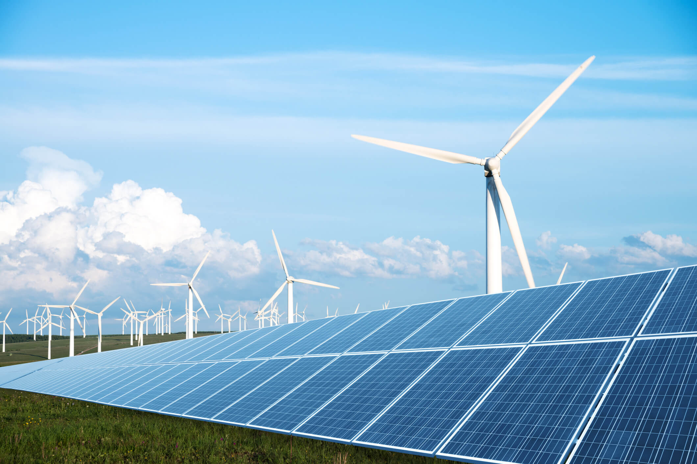

The AI Footprint
The AI FootprintTraining and Interference
Large AI models require substantial energy during training. Training involves processing massive datasets across thousands of specialized processors over extended periods. This phase can consume megawatt-hours of electricity. evaporative cooling systems.
After training, models continue to consuming energy during interference. Every time a user submits a query, generates text, or processes an image, computational resources are used. As AI becomes integrated into everyday products, inference demand becomes continuous and cumulative.
Data Centers and Emissions
AI workloads are concentrated in large-scale data centers. These facilities require stable, high-capacity electricity and operate continuously.
Environmental impact depends on several interrelated infrastructure factors.
Factors Influencing AI Energy Impact
Impact varies by region. In fossil-fuel–dependent areas, AI expansion can increase emissions. In renewable-powered regions, impact may be lower, though infrastructure demand still rises.
| Factor | What It Affects | Environmental Implication |
|---|---|---|
| Grid Carbon Intensity | Emissions per unit of electricity | Fossil-fuel grids increase AI-related carbon output |
| Hardware Efficiency | Energy required per computation | Efficient processors reduce overall electricity demand |
| Cooling Design | Total facility power load | Inefficient cooling increases system- wide energy use |
| Renewable Energy Sourcing | Energy origin | Renewable procurement lowers carbon intensity |

